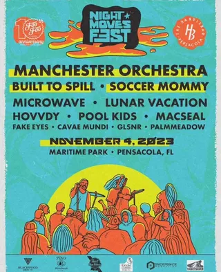

Community Maritime Park
2 shows on the diypensacola record since 2023
busiest year on the record: 2024, 1 shows. the record goes quiet after November 2024.

Nov 4, 2023 · manchester orchestra, built to spill +10busiest year on the record: 2024, 1 shows. the record goes quiet after November 2024.

Nov 4, 2023 · manchester orchestra, built to spill +10